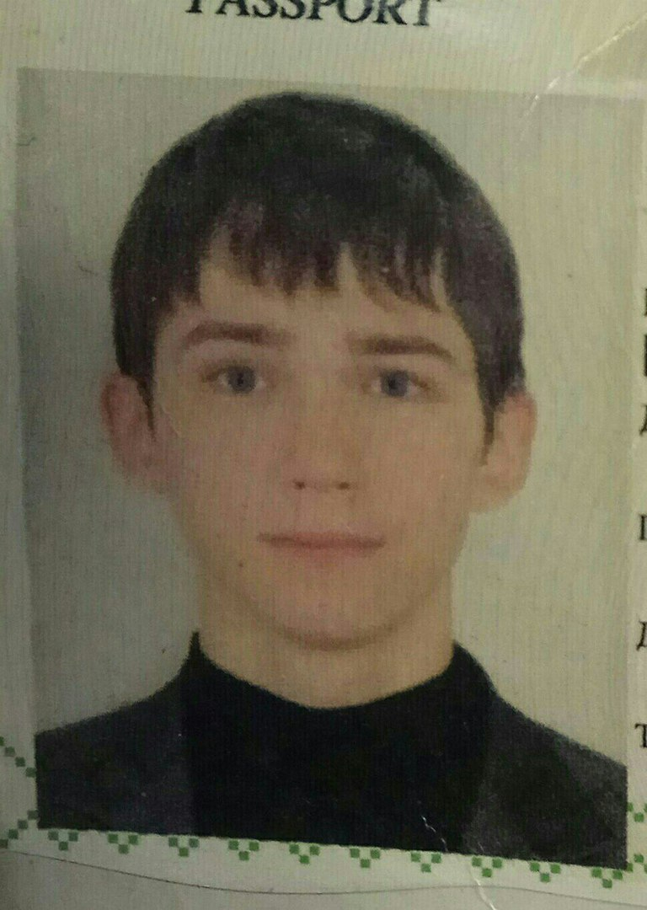

- My name is Andrei Maslau.
- Contact Info:
Phone: +375292195646;
E-mail:
maslovjobs@gmail.com, epamrollingscopes@gmail.com.
- About me:
I have one goal - to be happy. Therefore, my wishes
based on money, people and work as self-realisation. I graduated from BSUIR and work 1,5 year(half year as
Front-end Developer and one year as C Developer).
- Skills:
C + freeRTOS; JS(Vanilla), HTML4/5, CSS3, LESS, Git
(BitBucket, GitHub), SVN (TortoiseSVN), Kanban.
- Code examples (LATEST)
- Experience:
ЧУП "ВалКонсалтБай" - 3 month as Junior Front-end
Developer;
ООО "Tapston Development" - 3 month as Junior Front-end Developer;
ОАО "АГАТ-СИСТЕМ" - 1 year
as engineer.
- Education:
BSUIR - complete higher education with speciality
System Engineer. (including courses, seminars, lectures, online learning)
- English A2+;